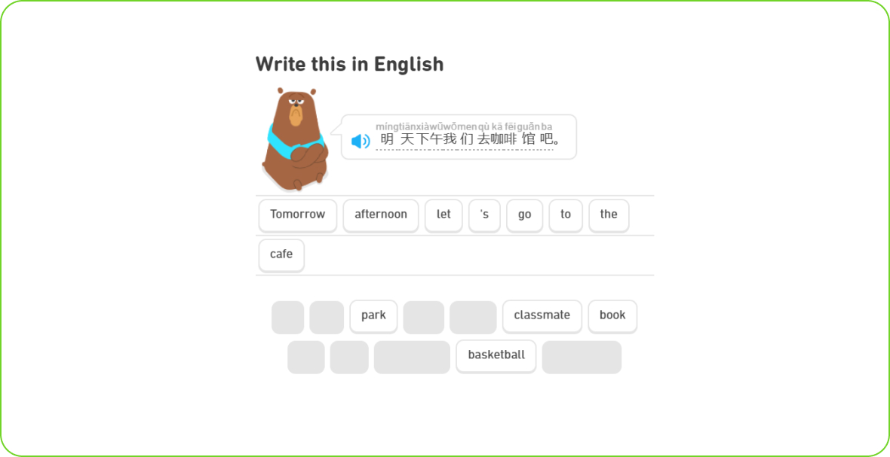
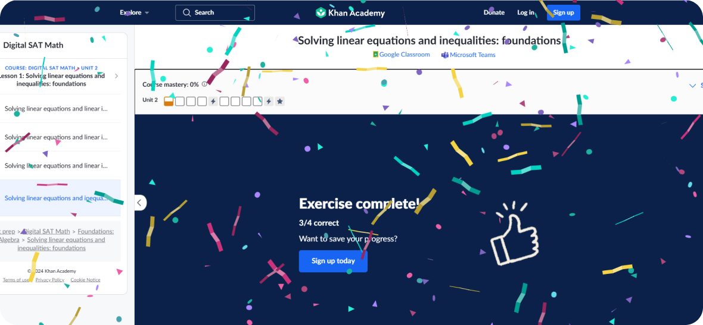
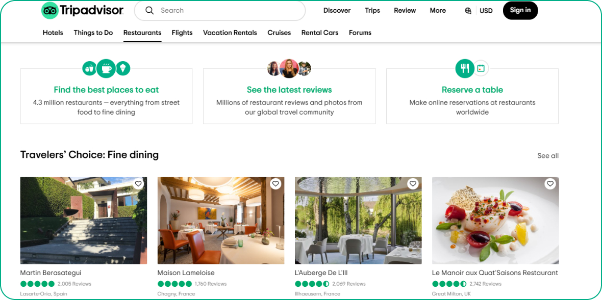

UX/UI дизайн
Паттерны
Поведенческие паттерны в UX-дизайне — типовые модели взаимодействия и действий пользователей при работе с цифровыми продуктами.
Эти паттерны описывают, как люди обычно ведут себя в определенных ситуациях и задачах, которые возникают при использовании сайтов, мобильных приложений, программ и других интерфейсов.
Понимание и учет таких поведенческих паттернов в UX-дизайне позволяет создавать интерфейсы, которые лучше соответствуют привычным моделям взаимодействия пользователей. Это повышает удобство использования и эффективность цифровых продуктов.
1. Действие-отмена
«Пусть я свободно исследую, не боясь последствий».
Пользователи склонны совершать экспериментальные действия, рассчитывая на возможность быстрой отмены.
В отличие от реального мира, цифровые интерфейсы предоставляют пользователям больше свободы для экспериментирования без страха негативных последствий. Хорошо продуманные интерфейсы должны поощрять людей к активному изучению, пробам и ошибкам.
Когда пользователям кажется, что они могут безопасно исследовать и взаимодействовать с интерфейсом, они, вероятно, будут проявлять больше любознательности и в итоге получать более позитивный опыт, чем те, кто сдерживает себя из-за страха навредить.
Примеры:
- Наличие кнопок "Назад" и функций "Отменить", которые позволяют легко вернуться к предыдущему состоянию
- Возможность применять и отменять различные эффекты, фильтры, преобразования без риска необратимого ущерба
- Сохранение истории действий, чтобы пользователь мог изучать и повторять их
- Другие механизмы, снижающие барьеры для экспериментирования и исследования

Скриншот сайта Duolingo
В Duolingo пользователи могут отменить свои последние действия в процессе обучения, например, если совершили ошибку в задании.
2. Мгновенное удовлетворение
«Я хочу действовать сейчас, а не откладывать».
Люди ожидают мгновенных результатов от своих действий. Будь то заказ еды, поиск поездки или свидания — пользователи привыкли получать желаемое практически сразу.
Если твой цифровой продукт не обеспечивает этого чувства немедленного удовлетворения, есть риск, что пользователь переключится на альтернативу, которая лучше соответствует его ожиданиям.
Примеры:
- Мгновенная визуальная обратная связь на действия пользователя
- Чёткие индикаторы прогресса для длительных процессов
- Подбор совпадений в приложении знакомств
- Взрыв конфетти

Скриншот сайта Khan Academy
После завершения задания или теста пользователи мгновенно получают обратную связь и результаты, что помогает им понять свои сильные и слабые стороны сразу.
3. Сканирование
«Мне хватает и так, не хочу тратить время».
Пользователи часто ориентируются на "достаточно хороший" результат вместо "наилучшего", если изучение всех вариантов займет слишком много времени и усилий.
Когда человек видит новый интерфейс, он быстро сканирует его, выбирая первый подходящий вариант, который поможет решить его задачу. Он не станет вчитываться в каждый элемент — скорее всего, сделает выбор на основе самых очевидных и заметных опций.
Примеры:
- Страницы новостей часто используют большие заголовки, подзаголовки и выделение ключевых слов, что помогает пользователям быстро находить интересные статьи
- На страницах продуктов используются четкие заголовки, изображения и ключевые особенности, чтобы пользователи могли удовлетворить свои потребности и принять решение о покупке без углубленного чтения
- На страницах курсов используются списки, разбиение по темам и выделенные ключевые моменты, что упрощает поиск нужной информации

Скриншот сайта TripAdvisor:
Сравнительные таблицы и списки рейтингов помогают пользователям быстро находить информацию о ресторанах, отелях и экскурсиях.
4. Привыкание
«Этот жест работает везде; почему здесь он не работает?»
При многократном использовании интерфейса, часто повторяющиеся действия становятся для пользователя рефлекторными. Эти привычные взаимодействия не требуют сознательных усилий.
Когда пользователь переходит между разными приложениями, он ожидает, что эти стандартные паттерны будут работать одинаково. Если какое-то действие не срабатывает, как ожидалось, это вызывает раздражение и сбивает с толку.
Примеры:
- Кнопка "Назад": Она обычно размещается в верхнем левом углу мобильных и веб-интерфейсов, что позволяет пользователям автоматически находить ее, даже если они используют новые приложения
- Автозаполнение и всплывающие подсказки: Многие веб-формы используют автозаполнение адреса или личной информации, что упрощает процесс ввода и делает его привычным
- Появление загрузки: Использование анимации при загрузке страниц или контента создает привычный образ: "Я ожидаю, что это произойдет, и это нормально"
- Кнопка "Купить сейчас": Эта кнопка всегда выделяется на странице с товаром, и пользователи легко распознают ее как основной элемент для покупки. Кнопка "Добавить в корзину" находится прямо под ней, создавая предпочтительный путь действий
- Кнопка "Загрузить файл": Эта кнопка всегда легко доступна и главная при работе с файлами, что делает ее знакомой для повторяющегося использования
5. Социальное доказательство
«Что другие говорили об этом?»
Люди — существа социальные. Даже если у нас есть собственное мнение, мы, как правило, склонны ориентироваться на то, что говорят и делают наши коллеги и окружение. Мы стремимся к одобрению от других и желаем принадлежать к группе. Наша идентичность во многом строится на взаимодействии в социальных сетях.
Нужно показывать индикаторы популярности и "социального одобрения" — чтобы новые пользователи чувствовали себя менее одинокими при принятии решений. Если другие люди уже что-то опробовали и остались довольны, вероятность, что это хороший вариант, значительно выше.
Примеры:
- Обзоры и рейтинги на площадках вроде Amazon, Airbnb, Yelp
- Лайки, реакции, публикации, подписчики в социальных сетях
- Отметки "друзья оценили" или "рекомендовано друзьями"
- Количество комментариев, просмотров, подтвержденные аккаунты
6. Якорение
«Ого, а ведь я действительно заметил, как эта начальная информация повлияла на мою оценку, хотя она совсем не относится к делу».
Паттерн якорения — когнитивное искажение, в соответствии с которым люди склонны слишком сильно полагаться на первую информацию, с которой они столкнулись (так называемый "якорь"), когда оценивают или принимают решения.
Примеры:
- Если на странице первым делом показана высокая цена на товар или услугу, это будет воспринято пользователем как "нормальная" стоимость. Последующее снижение цены или предложение скидки будет восприниматься как более выгодное предложение, даже если окончательная цена все еще относительно высокая
- Размещение более дорогих или премиальных вариантов продукта в качестве первого варианта на странице. Это формирует восприятие пользователя, что "средний" вариант, который предлагается следом, является более доступной и выгодной опцией
- Отображение в первую очередь рекомендованных или "популярных" продуктов и услуг. Это создает впечатление, что эти варианты являются наиболее востребованными и, возможно, оптимальными для пользователя
7. Когнитивная нагрузка
«Ого, здесь так много информации и функций, я не могу сразу понять, что и где находится».
Когнитивная нагрузка — это количество ментальных усилий, необходимых пользователю для восприятия и взаимодействия с веб-интерфейсом. Этот паттерн призван минимизировать когнитивную нагрузку на пользователя, чтобы обеспечить эффективное и комфортное взаимодействие.
Вот ключевые аспекты этого паттерна:
1. Упрощение интерфейса:
- Использование понятных и интуитивно логичных элементов управления
- Четкая иерархия и структурирование информации на странице
- Минимизация количества вариантов выбора и действий для пользователя
Упрощение интерфейса на примере сайта Airbnb:
- Четкая структура страницы с основными разделами (поиск, популярные направления, рекомендации)
- Минимальное количество элементов управления, интуитивно понятные фильтры и кнопки
- Использование крупных визуальных элементов (фотографии жилья) для быстрого восприятия
2. Ограничение объема информации:
- Отображение только необходимых данных и функций на странице
- Разделение контента на логические блоки и секции
- Постепенное раскрытие дополнительной информации по мере необходимости
Ограничение объема информации на примере сайта Apple:
- Отображение только ключевых характеристик и функций продуктов на главной странице
- Постепенное раскрытие дополнительной информации по мере перехода на более детальные страницы
- Разделение продуктовой линейки на логичные категории для облегчения навигации
3. Использование визуальных подсказок:
- Применение наглядных иконок, иллюстраций и графических элементов
- Цветовое кодирование и выделение ключевых элементов
- Предоставление контекстных подсказок и инструкций при необходимости
Использование визуальных подсказок на примере сайта Booking.com:
- Цветовое выделение важных параметров (цена, рейтинг, доступность) на карточках отелей
- Наглядные иконки для быстрого распознавания ключевых характеристик (Wi-Fi, парковка, завтрак)
- Контекстные подсказки при применении фильтров и настроек поиска
4. Оптимизация под мобильные устройства:
- Адаптация веб-интерфейса для удобного использования на мобильных экранах
- Упрощение навигации и сокращение количества шагов для выполнения действий
- Оптимизация размера и расположения элементов управления для touchscreen
8. Проспективная память
«Я помещаю это сюда, чтобы напомнить себе, сделать это позже».
Проспективная память помогает нам планировать и напоминать себе о действиях, которые нужно выполнить в будущем. Например, если завтра вам нужно принести на работу книгу, вы можете поставить ее на видном месте у двери накануне вечером. Или если вам нужно ответить на письмо позже, вы можете оставить его открытым на экране в качестве напоминания.
Хотя проспективная память не так часто находит отражение в интерфейсах, это важный паттерн, который стоит учитывать при проектировании. Предоставление пользователям средств для управления проспективной памятью может значительно повысить удобство использования.
Примеры:
1. Напоминания о незавершенных действиях в интернет-магазине:
- На странице корзины пользователю показывается напоминание о товарах, которые он ранее добавил, но не оформил заказ
- При переходе на другие разделы сайта всплывает уведомление, напоминающее о незавершенной покупке
- Отправка email-напоминания, если пользователь не вернулся на сайт в течение определенного времени
2. Подсказки о предстоящих платежах в личном кабинете:
- На странице профиля показываются предстоящие платежи по подписке или счета к оплате с указанием сроков
- Пользователь получает push-уведомление за несколько дней до даты очередного платежа
- В календаре личного кабинета отмечаются даты предстоящих платежей
3. Поэтапное заполнение длинных форм:
- Регистрационная форма разбита на несколько шагов, на каждом из которых пользователю предоставляются четкие инструкции
- При переходе между шагами формы сохраняется введенная информация, чтобы пользователь мог в любой момент вернуться и продолжить
- После успешного завершения формы отображается финальное подтверждение с кратким резюме введенных данных
4. Визуальное подтверждение завершения задач:
- При успешной отправке заявки на сайте страховой компании появляется анимированное подтверждение и номер обращения
- После завершения онлайн-транзакции на сайте интернет-банка отображается четкое визуальное оповещение о статусе платежа
- На странице "Мои заказы" интернет-магазина заказы со статусом "Доставлен" выделяются зеленым цветом для лучшего восприятия
9. Управление ожиданиями
«Я понимаю, что происходит и сколько времени это займет. Я готов ждать, так как знаю, что в итоге все будет сделано».
Установление реалистичных ожиданий у пользователей относительно времени выполнения действий, доступности функций и т.д.
Основные задачи этого паттерна:
1. Прозрачность процессов. Информировать пользователей о том, что происходит "за кулисами" системы, какие действия выполняются и сколько времени это займет.
Примеры реализации:
- Индикаторы загрузки и прогресс-бары, отображающие статус выполнения операций
- Визуальные подсказки, объясняющие этапы сложных процессов (например, при оформлении заказа)
- Уведомления о ходе длительных фоновых задач (загрузка, обновление, сохранение)
2. Предсказуемость результатов. Помогать пользователям предвидеть, что произойдет в результате их действий, чтобы избежать разочарований.
Примеры реализации:
- Четкие прогнозы сроков доставки, времени обработки заявок, длительности операций
- Предупреждения о возможных последствиях опасных действий (удаление, отмена подписки)
- Информация о доступности товаров, услуг, функций в данный момент
3. Управление неопределенностью. Снижать тревожность пользователей в ситуациях, когда им приходится ждать, пока что-то произойдет.
Примеры реализации:
- Отображение статуса обработки запросов, заявок, операций
- Оценки времени ожидания ответа службы поддержки, соединения с оператором
- Объяснение причин задержек, сбоев, недоступности некоторых функций
10. Настройка и персонализация
«Отлично, теперь я могу адаптировать этот интерфейс под свои нужды и работать быстрее и комфортнее».
Позволение пользователям адаптировать интерфейс и функциональность под свои потребности. Примеры: настройка представления данных, сохранение пользовательских параметров, рекомендации на основе предпочтений.
Примеры:
1. Изменение внешнего вида:
- Выбор темы оформления (светлая, темная, корпоративная)
- Настройка шрифтов, размеров, цветовых схем
- Персонализация иконок, изображений, стилей
Пример: Настройка внешнего вида в приложении Slack
2. Кастомизация элементов интерфейса
- Добавление, удаление и перемещение виджетов, панелей, вкладок
- Настройка размеров и расположения элементов
- Создание собственных комбинаций инструментов
Пример: Персонализация рабочего стола в операционной системе Windows
3. Фильтрация и сортировка контента:
- Возможность настраивать отображение данных (список, сетка, карточки)
- Применение фильтров по различным параметрам
- Определение порядка сортировки (по дате, названию, рейтингу)
Пример: Настройка отображения результатов поиска в Google
4. Управление личными коллекциями:
- Создание собственных папок, списков, закладок
- Сохранение предпочтительных подборок
- Получение рекомендаций на основе истории
Пример: Персональные коллекции в приложении Netflix
5. Сохранение пользовательских настроек:
- Автоматическое применение предыдущих параметров
- Синхронизация настроек между устройствами
- Возможность экспорта/импорта профиля
Пример: Пользовательские профили в Adobe Creative Cloud
Итоги
Действие-отмена
Предоставление пользователю возможности отмены действия повышает уверенность и снижает страх перед ошибками. Это создает ощущение контроля над процессом и снижает барьер для экспериментов с функциями.
Как применять:
- Предоставь пользователям возможность отменить действия, добавляя кнопки «Отмена» или «Вернуться» в очевидных местах
- Реализуй подтверждение перед выполнением необратимых действий (например, удаление аккаунта или данных)
- Используй всплывающие уведомления, чтобы напомнить пользователям о возможности отмены
Мгновенное удовлетворение
Пользователи предпочитают получать немедленные результаты своих действий. Обеспечение быстрого отклика и обработки запросов помогает поддерживать положительное отношение к продукту и улучшает общую удовлетворенность.
Как применять:
- Оптимизируй время загрузки страниц и откликов интерфейса для обеспечения быстрой обратной связи на действия пользователей
- Используй микровзаимодействия (например, анимации или изменения цвета) для визуального подтверждения выполнения действия
- Предоставляй результаты немедленно после взаимодействия, чтобы пользователи видели эффект своих действий
Сканирование
Большинство пользователей не читают текст в полном объеме, а сканируют его в поисках ключевой информации. Поэтому важно структурировать контент, использовать заголовки, списки и визуальные акценты для удобства восприятия.
Как применять:
- Структурируй контент с помощью заголовков, списка с маркерами и абзацев, чтобы облегчить восприятие
- Используй выделение (пример: жирный шрифт, цвет фона) ключевых слов и фраз, чтобы привлечь внимание к важной информации
- Внедряй визуальные элементы (иконки, изображения), чтобы сделать текст более восприимчивым
Привыкание
Повторное взаимодействие с интерфейсом помогает пользователям осуществлять действия автоматически. Проектирование интерфейсов с учетом привычных элементов способствует более быстрому освоению приложения.
Как применять:
- Создай последовательность действий, которые пользователи могут легко выполнять; придерживайтесь привычных элементов управления
- Используй одинаковые паттерны и расположения элементов на различных экранах для создания предсказуемого интерфейса
- Включи обучение или подсказки для новых пользователей, чтобы помочь им быстрее привыкнуть к функциональности
Социальное доказательство
Люди склонны доверять сложившимся мнениям и отзывам других. Элементы социального доказательства, такие как оценки, отзывы или количество пользователей, могут усилить доверие к продукту и воздействовать на поведение пользователей.
Как применять:
- Размещай на видных местах отзывы, рейтинги и комментарии пользователей о вашем продукте
- Показывай количество подписчиков, пользователей или клиентов, чтобы создать впечатление популярности и надежности
- Используй кейс-стадии и примеры использования, чтобы продемонстрировать успех вашего продукта другими пользователями
Якорение
Якорение — это когнитивный эффект, при котором первое впечатление или информация служат базой для последующих оценок. Использование ценовых япиков или сравнение с другими продуктами может повлиять на восприятие пользователя.
Как применять:
- Применяй стратегию ценообразования, показывая высокую первоначальную цену и затем предлагая скидки, чтобы создать восприятие выгодного предложения
- Позиционируй продукты в сравнительных таблицах, показывая более дорогие или менее популярных вариантов рядом с вашим предложением, чтобы улучшить восприятие
- Используй начальные ставки при формировании предложений или услуг, чтобы установить базу для оценок пользователя
Когнитивная нагрузка
Снижение количества информации и упрощение взаимодействия помогает минимизировать когнитивную нагрузку. Четкие и интуитивные интерфейсы позволяют пользователям легче воспринимать информацию и принимать решения.
Как применять:
- Минимизируй количество видимых элементов на экране, чтобы не перегружать пользователя информацией
- Разделяй задачи на шаги или этапы, чтобы уменьшить количество информации, воспринимаемой одновременно
- Обеспечь ясные и лаконичные инструкции, чтобы пользователи могли легко понимать, что требуется сделать
Проспективная память
Интерфейсы, которые помогают пользователю помнить о будущих действиях (например, напоминания о задачах или событиях), поддерживают активное участие и вовлеченность.
Как применять:
- Внедряй напоминания или уведомления о предстоящих действиях, таких как события или сроки выполнения задач
- Создавай возможность для пользователей устанавливать собственные напоминания и уведомления в приложении
- Используй метки и пометки на задачах или событиях, чтобы пользователи могли легко убедиться, что они не упустят ничего важного
Управление ожиданиями
Ясные указания и обратная связь помогают пользователям понять, что происходит, и управляют их ожиданиями. Это позволяет уменьшить уровень стресса и неопределенности.
Как применять:
- Четко обозначь, что пользователь может ожидать на каждом этапе, чтобы уменьшить неопределенность
- Используй состояния загрузки и уведомления о процессе выполнения задач, чтобы информировать пользователей о том, что происходит
- Реализуй объясняющие подсказки и древовидные меню, чтобы пользователи понимали структуру навигации
Настройка и персонализация
Позволение пользователям настраивать интерфейс под свои нужды и предпочтения создает чувство индивидуальности и улучшает взаимодействие с продуктом. Персонализированные рекомендации, настройки отображения и другие элементы способствуют более глубокому вовлечению.
Как применять:
- Позволь пользователям настраивать интерфейс, выбирая темы, шрифты или элементы управления, чтобы создать индивидуальный опыт
- Используй алгоритмы рекомендаций, чтобы предлагать контент или продукты на основе предыдущих действий пользователей
- Включи возможность создания пользовательских профилей, где мужчины смогут сохранять свои предпочтения и настройки
Практика
Действие-отмена
Создай прототип простого веб-приложения (например, для заметок) с функцией добавления и удаления заметок. Реализуй возможность отмены действия (например, удаление заметки) и поясни, как это улучшает пользовательский опыт.
Мгновенное удовлетворение
Проанализируй известное приложение (например, мессенджер или социальную сеть). Определи, как быстро оно реагирует на действия пользователя. Затем создай собственное приложение, используя элементы мгновенного удовлетворения, такие как анимации или уведомления для подтверждения выполнения действий.
Сканирование
Выбери страницу большого веб-сайта и проанализируй, как информация представлена. Затем создай макет новой страницы для этого сайта, которая будет более удобной для сканирования, используя заголовки, списки и визуальные акценты.
Привыкание
Разработай интерфейс для приложения, которое включает функционал с привычными элементами (кнопки, меню). Объясни, как продуманные дизайнерские решения помогут пользователям быстро привыкнуть к твоему продукту.
Социальное доказательство
Создай веб-страницу продукта, добавив элементы социального доказательства, такие как отзывы пользователей, рейтинги и статистику (количество продаж, пользователей и т.д.). Обоснуй, как эти элементы могут повлиять на решение посетителей.
Якорение
Исследуй три разных веб-магазина и определи, как они используют якорение в своих ценовых стратегиях. Затем создай свой собственный макет магазина с учетом принципа якорения и объясни, как твои решения могут повлиять на восприятие цены.
Когнитивная нагрузка
Найди форму регистрации, которая кажется сложной или запутанной. Переработай ее так, чтобы сократить когнитивную нагрузку. Убедись, что полей для заполнения не слишком много и что процесс регистрации логично структурирован.
Проспективная память
Разработай приложение для планирования задач. Включи механизм напоминаний и уведомлений о предстоящих задачах. Объясни, как использование таких функций улучшает управление временем для пользователей.
Управление ожиданиями
Создай макет веб-страницы с формой обратной связи или заказа. Объясни, какие элементы интерфейса помогут пользователю понять, какова структура и что они могут ожидать после отправки формы.
Настройка и персонализация
Разработай интерфейс для приложения, позволяющий пользователю настраивать его внешний вид (темы, шрифты) и функционал (выбор интересующего контента). Объясни, как эти возможности влияют на пользовательский опыт.